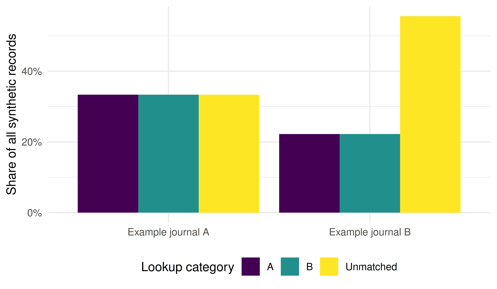
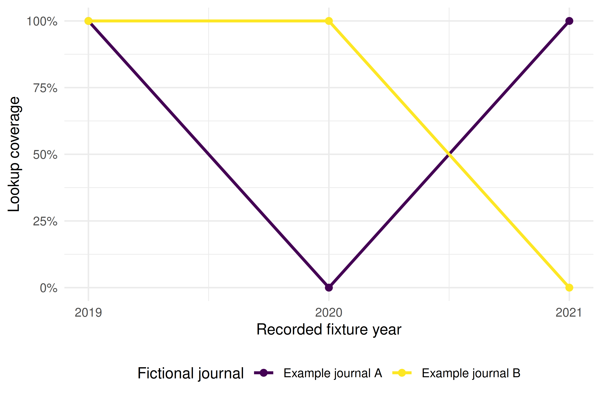

41 Case Study 4: Gender Gap in Scientific Publishing
41.1 Objective
Examine why a name lookup cannot establish a gender gap, using an explicitly synthetic example of two fictional journals. We compare arbitrary lookup categories, retain unmatched records in every denominator, and track lookup coverage by recorded authorship position and year. None of the records represents a real person, paper or journal; no gender identity is observed or inferred.
An actual study of gender equity requires a defensible demographic variable and its provenance, a defined population, appropriate data governance, and a plan for validation and missing data. A list of names is not a substitute for those observations. Chapter 28.1 develops these distinctions.
41.3 Synthetic teaching records
The six invented papers have explicit publication years and ordered name lists. The names are placeholders, and repeated names do not establish shared author identity. Each row created below is an authorship record, not a distinct person. This example makes no API request.
works_example <- tibble(
work_id = c("example-a1", "example-a2", "example-a3",
"example-b1", "example-b2", "example-b3"),
journal = rep(c("Example journal A", "Example journal B"), each = 3),
year = rep(2019:2021, 2),
first_names = list(c("aria", "jordan", "lee"), c("noor", "ari"), "morgan",
c("aria", "nuri", "sam", "alex"), c("ari", "noor"),
c("lee", "jordan", "morgan"))
)41.4 Arbitrary lookup and complete denominators
For teaching purposes only, assign aria and ari to A, and jordan and
morgan to B. These arbitrary categories have no demographic meaning.
Every other name is explicitly unmatched. Dropping unmatched records would
change both the denominator and the question answered by a proportion.
authors_example <- works_example |>
unnest_longer(first_names, values_to = "first_name", indices_to = "author_order") |>
group_by(work_id) |>
mutate(
n_authors = n(),
position = case_when(
n_authors == 1 ~ "single",
author_order == 1 ~ "first",
author_order == n_authors ~ "last",
TRUE ~ "middle"
)
) |>
ungroup() |>
mutate(
lookup_category = case_when(
first_name %in% c("aria", "ari") ~ "A",
first_name %in% c("jordan", "morgan") ~ "B",
TRUE ~ "Unmatched"
),
lookup_category = factor(lookup_category, levels = c("A", "B", "Unmatched")),
position = factor(position, levels = c("first", "middle", "last", "single"))
)
coverage_summary <- authors_example |>
group_by(journal) |>
summarise(records = n(), matched = sum(lookup_category != "Unmatched"),
coverage = matched / records, .groups = "drop")
coverage_summary |> gt() |> fmt_percent(columns = coverage, decimals = 1)| journal | records | matched | coverage |
|---|---|---|---|
| Example journal A | 6 | 4 | 66.7% |
| Example journal B | 9 | 4 | 44.4% |
41.5 Lookup categories by fictional journal
journal_summary <- authors_example |>
count(journal, lookup_category, .drop = FALSE) |>
group_by(journal) |>
mutate(pct = n / sum(n)) |>
ungroup()
ggplot(journal_summary, aes(x = journal, y = pct, fill = lookup_category)) +
geom_col(position = "dodge") +
scale_y_continuous(labels = scales::percent) +
scale_fill_manual(values = palette_sci(3), drop = FALSE) +
labs(x = NULL, y = "Share of all synthetic records", fill = "Lookup category") +
theme_sci()
Figure 41.1: Arbitrary lookup categories among all synthetic authorship records in two fictional journals; these are not gender proportions.
41.7 Coverage by recorded year
The year comes from the fixture’s explicit publication-year column, never from an identifier. For each fictional journal/year, the denominator includes all first- or single-author records. Each group has only one such record here, so coverage is either zero or one. This illustrates denominator accounting; it supplies no evidence about a demographic trend.
coverage_by_year <- authors_example |>
filter(position %in% c("first", "single")) |>
group_by(journal, year) |>
summarise(records = n(), matched = sum(lookup_category != "Unmatched"),
coverage = matched / records, .groups = "drop")
ggplot(coverage_by_year, aes(x = year, y = coverage, colour = journal)) +
geom_line(linewidth = 1) +
geom_point(size = 2) +
scale_x_continuous(breaks = 2019:2021) +
scale_y_continuous(labels = scales::percent, limits = c(0, 1)) +
scale_colour_manual(values = palette_sci(2)) +
labs(x = "Recorded fixture year", y = "Lookup coverage", colour = "Fictional journal") +
theme_sci()
Figure 41.3: Lookup coverage among first- or single-author records by explicit fixture year. Each fictional journal/year has one record; no demographic trend is measured.
41.8 What the fixture establishes
- Denominators change the result. The fixture contains 15 authorship records: four A, four B and seven unmatched. Removing unmatched records would make A and B each half of the retained records, concealing that almost half of all records had no lookup match.
- Coverage differs by construction. Example journal A has four matched records out of six; Example journal B has four out of nine. These differences follow from the invented name lists, not disciplinary or demographic evidence.
- Identity and contribution remain unobserved. Neither the labels, the recorded positions nor their changes across fixture years support a claim about a gender gap, seniority or progress toward equity.
41.9 Requirements for an actual study
A real study needs a scientific question, a defined population and suitable observations of the demographic variable of interest. Document their provenance, ethical basis, categories, missingness and validation. Names cannot determine a person’s self-identified gender; a name-classification service, if used for a carefully justified question, still needs context-specific validation and an explicit account of what its labels measure. A confidence score alone does not validate the resulting equity estimate. See Chapter 28.6 and Santamaría and Mihaljević (2018).
This fixture contains no demographic observations or real journal comparison. No conclusion about a persistent gender gap, disciplinary differences or temporal progress can be drawn from it.